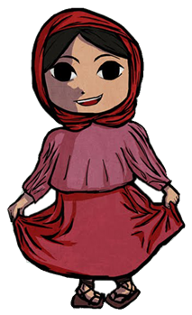

En esta materia se ve por completo el Estado de Chihuahua, su zona geográfica, su historia desde su fundación hasta la actualidad, sus etnias extintas y las que siguen aun hoy en día, también se ven sus Pueblos mágicos y su recursos naturales que se aprovechan y aprovecharon, los lugares históricos y emblemáticos que han marcado la historia de Chihuahua a nivel nacional.
2.1 Primeros pobladores: Primeros pueblos etnicos en Chihuahua
3.1 Conquista y Colonizaión: Conquista y Evangelización, Pueblos mineros
5.2 Chihuahua Post-Revolucionarió: Quevedismo